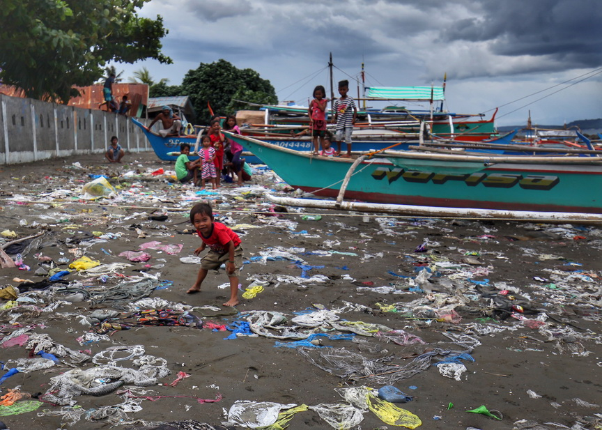
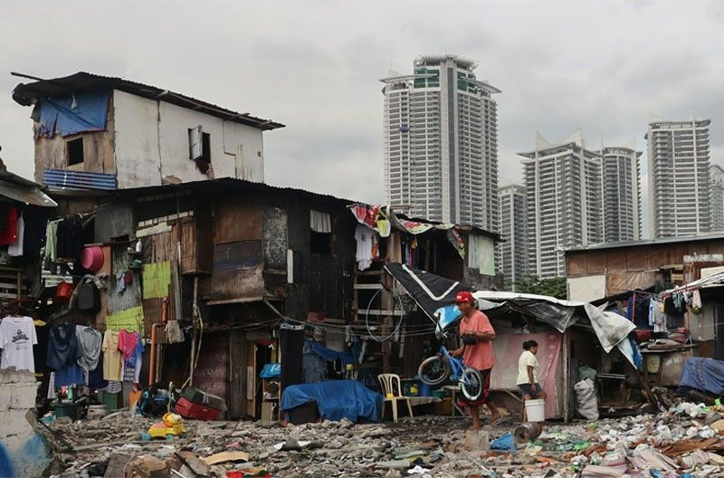

13,873 Reasons: The Struggle Against Poverty in Mindanao
Author: Suyo(2024)
According to the Philippine Statistics Authority (PSA, 2023), a family of five in the Philippines needed at least ₱13,873 per month to meet their basic needs.
This amount is more than just a number, it represents the daily struggles of millions, especially in Mindanao, where poverty is most severe.
Mindanao has a poverty rate of 36.2 percent, the highest in the country. Despite the region's rich natural resources, nearly 9 million people live below the poverty line.
Poor roads, lack of healthcare, and years of neglect have left many residents unable to escape this cycle.
As one professor from Mindanao State University put it, “We boast about our durian, mangosteen, and other resources, yet we have plenty of poor people.”
Life is a constant struggle for families earning less than ₱13,873 a month. Basic needs such as food, water, and shelter are daily concerns, and families often

find themselves making tough choices, such as whether to pay for school fees or buy groceries.
Children often leave school to work and help support their families, while many adults take on several jobs just to get by.
This cycle of poverty continues from one generation to the next, making it harder to break free. The situation is made even worse by Mindanao's history of conflict.
Ongoing violence in certain areas has

forced families to move and interrupted local economies, deepening the poverty that already exists.
Communities that face both naturaldisasters and violent conflict are left without the resources they need to rebuild or recover.
These challenges contribute to the growing divide between the rich and the poor.
Despite these struggles, Mindanao has a lot of potential. Its natural resources, such as fertile land, minerals, and strong fishing communities, can be used to create more job opportunities.
However, these resources have not been fully used because of poor infrastructure, lack of investment, and government neglect.
The region needs more long-term solutions that focus on building lasting industries and improving education to prepare future generations for better chances.